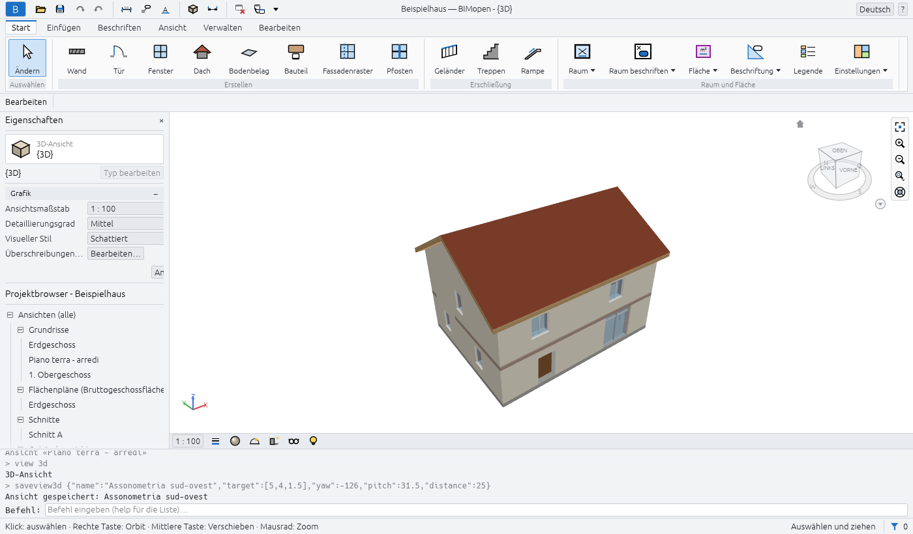
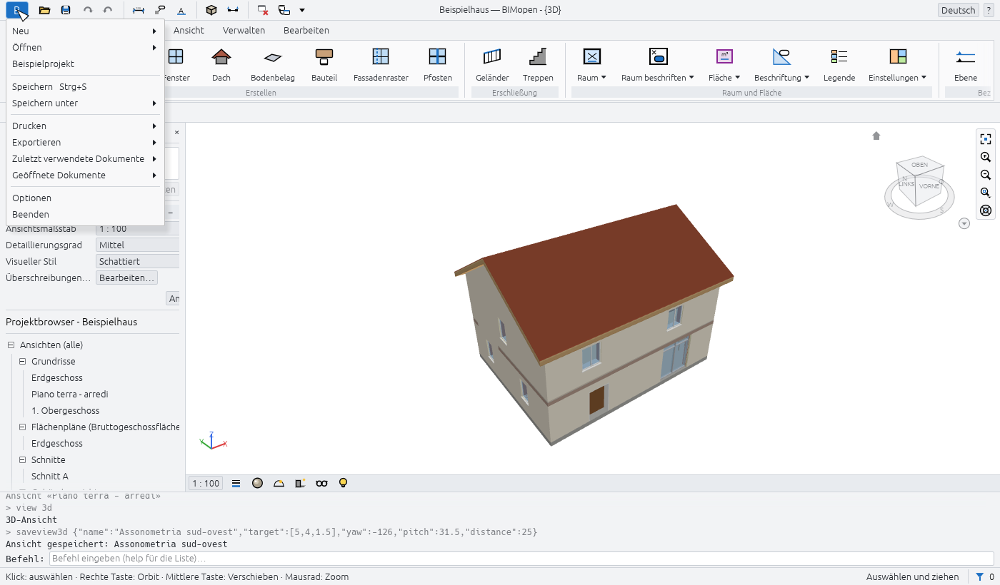
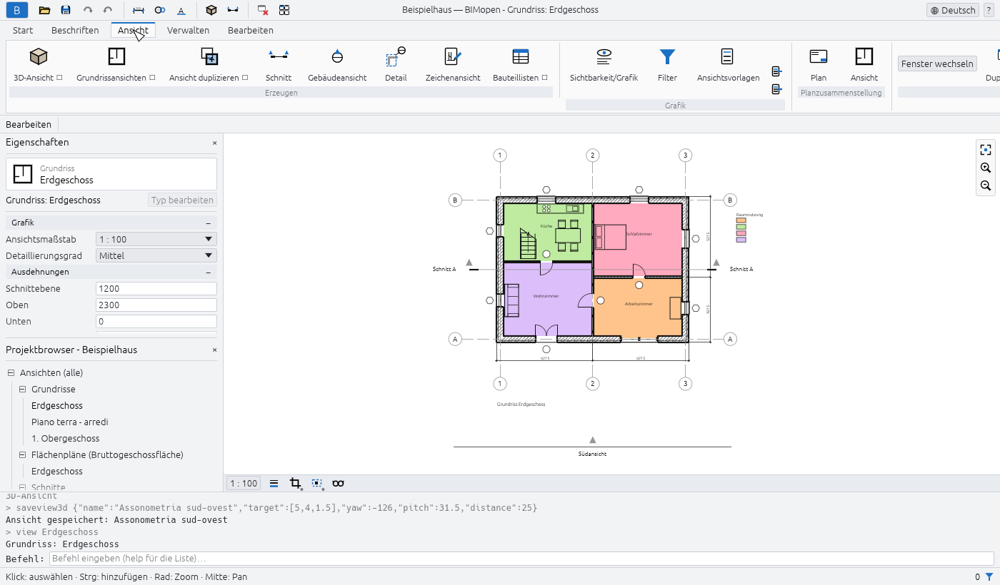
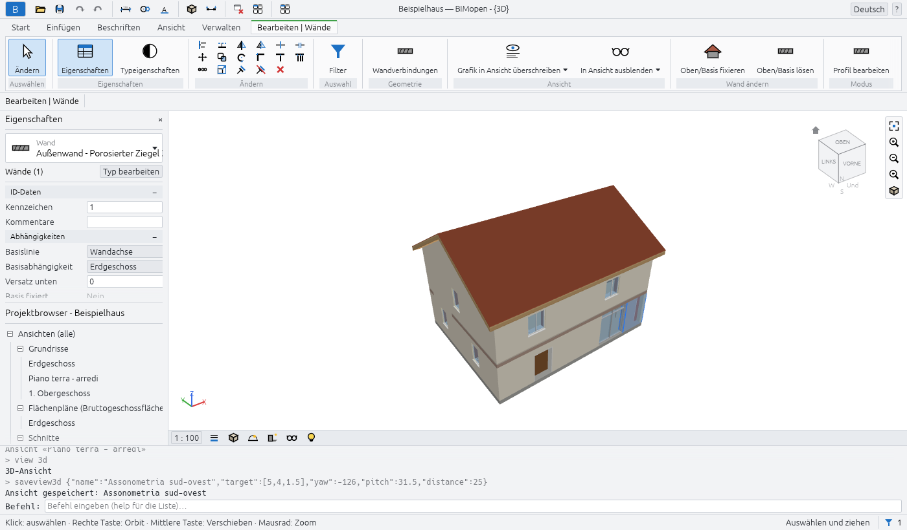
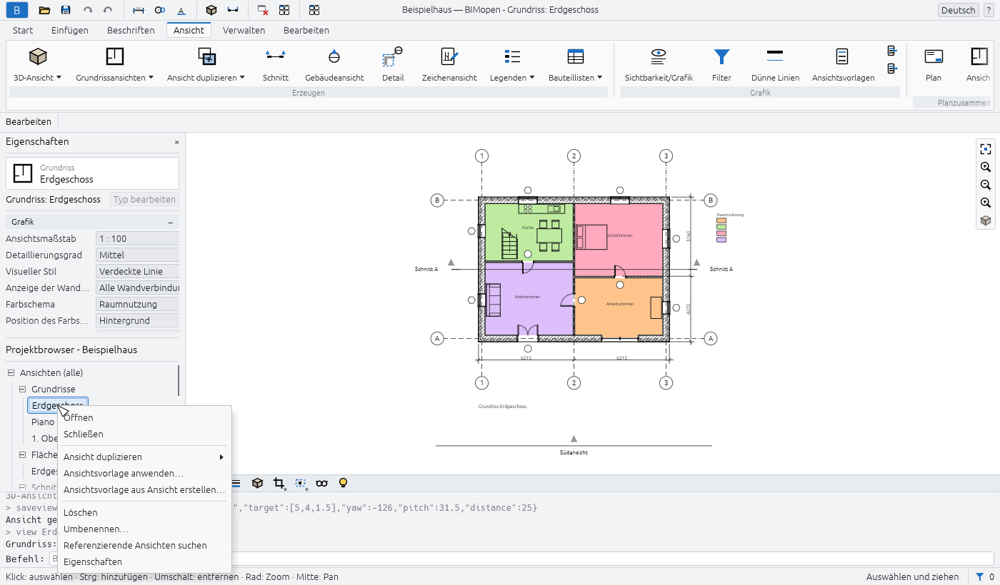
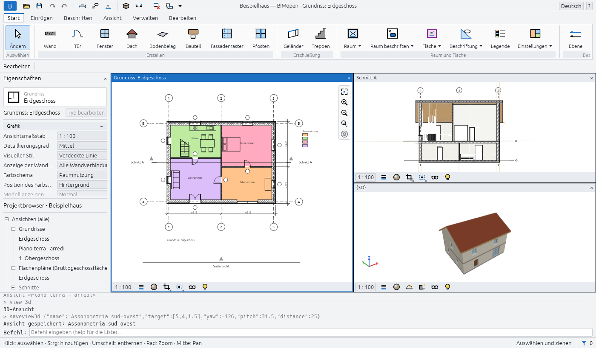
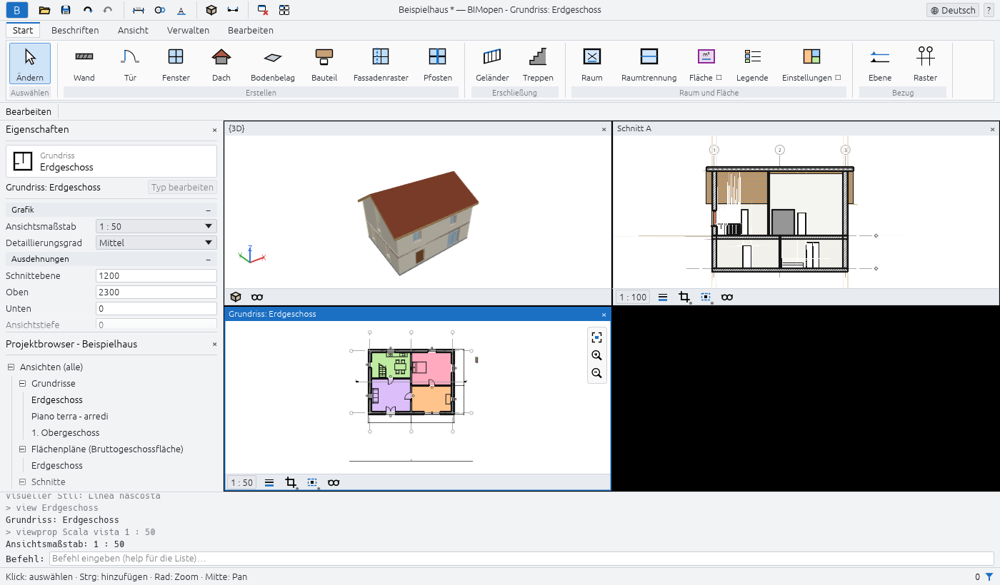

Die Benutzeroberfläche
Das BIMopen-Fenster besteht in der Desktop- und in der Webversion aus denselben Teilen. Von oben nach unten:
- die Titelleiste mit dem Anwendungsmenü, dem Schnellzugriff-Werkzeugkasten, dem Namen des Projekts und der aktiven Ansicht, dem Sprachmenü und dem Hilfemenü;
- die Multifunktionsleiste mit ihren Registerkarten und Werkzeuggruppen;
- die Optionsleiste mit den Einstellungen des aktiven Werkzeugs;
- links die Palette Eigenschaften über dem Projektbrowser;
- der Zeichenbereich, in dem sich die Ansichten in Fenstern öffnen, jedes mit seiner Ansichtssteuerungsleiste;
- die Befehlszeile mit dem Protokoll dessen, was getan wurde;
- die Statusleiste.

Auf Arabisch ist das ganze Fenster gespiegelt: Die Paletten befinden sich rechts, die Multifunktionsleiste und die Optionsleiste lesen sich von rechts nach links, und die Navigationsleiste liegt am linken Rand der Ansichten.
Anwendungsmenü
Die blaue Schaltfläche B am linken Ende der Titelleiste öffnet das Anwendungsmenü: die Befehle, die auf das ganze Projekt wirken.

| Eintrag | Funktion |
|---|---|
| Neu | Schließt das aktuelle Projekt und beginnt ein neues aus der Standardvorlage: zwei Ebenen mit ihren Grundrissen und die Standardtypen |
| Öffnen… | Öffnet ein .bimopen-Projekt oder importiert ein .rvt-Modell, ausgewählt in einem Dateidialog. Im Browser ziehen Sie die Datei stattdessen in die Seite |
| Beispielprojekt | Öffnet das Beispielhaus |
| Speichern Ctrl+S | Speichert das Projekt in seiner Datei; ein noch nie gespeichertes Projekt fragt wie Speichern unter… nach einem Namen |
| Speichern unter… | Speichert das Projekt in einer neuen .bimopen-Datei und arbeitet mit dieser Datei weiter |
| Drucken… Ctrl+P | Druckt Pläne als PDF |
| Exportieren ▸ IFC4 exportieren… | Schreibt das Modell als IFC4-Datei |
| Exportieren ▸ Grundriss als SVG exportieren… | Schreibt den aktiven Grundriss als SVG-Zeichnung |
| Exportieren ▸ Ansicht als PNG exportieren… | Schreibt die aktive Ansicht als PNG-Bild |
| Geöffnete Dokumente | Listet die geöffneten Ansichtsfenster auf; ein Klick auf eines holt es nach vorn |
| Optionen | Öffnet den Dialog Optionen |
| Beenden | Schließt BIMopen (nur Desktop) |
Neu, Öffnen… und Beispielprojekt ersetzen das aktuelle Projekt ohne Rückfrage: Speichern Sie es vorher, wenn Sie es behalten möchten.
Warning
Ungespeicherte Änderungen gehen verloren, wenn Sie Neu, Öffnen… oder Beispielprojekt wählen. Der Stern nach dem Namen des Projekts in der Titelleiste zeigt Ihnen, dass es ungespeicherte Änderungen gibt.
Optionen
Anwendungsmenü ▸ Optionen hat zwei Gruppen:
| Einstellung | Werte | Wirkung |
|---|---|---|
| Benutzeroberfläche ▸ Sprache | Italiano, English, Deutsch, Français, Español, العربية | Die Sprache der ganzen Benutzeroberfläche, sofort |
| Benutzeroberfläche ▸ Design | Hell, Dunkel | Die Farben des Fensters. Dunkel schaltet auch Hintergrundfarbe umkehren ein |
| Grafik ▸ Hintergrundfarbe umkehren | ein, aus | Ansichten mit dunklem Hintergrund und hellen Linien |
BIMopen merkt sich Sprache und Design für den nächsten Start.
Schnellzugriff-Werkzeugkasten
Neben dem Anwendungsmenü hält der Schnellzugriff-Werkzeugkasten die meistverwendeten Befehle einen Klick entfernt bereit. Ruht die Maus auf einer Schaltfläche, erfahren Sie, was sie tut und welches Kürzel sie hat.
| Schaltfläche | Funktion |
|---|---|
| Öffnen… (Ordner) | Wie im Anwendungsmenü |
| Speichern (Diskette) | Speichert, Ctrl+S |
| Rückgängig (Pfeil nach links) | Macht die letzte Änderung rückgängig, Ctrl+Z. Ausgegraut, wenn es nichts rückgängig zu machen gibt |
| Wiederherstellen (Pfeil nach rechts) | Stellt die gerade rückgängig gemachte Änderung wieder her, Ctrl+Y. Ausgegraut, wenn es nichts wiederherzustellen gibt |
| Ausgerichtete Bemaßung | Startet das Werkzeug für ausgerichtete Bemaßungen, DI |
| Alle beschriften | Beschriftet die Türen und Fenster des geöffneten Grundrisses, die noch keine Beschriftung haben, TG |
| Text | Startet das Textwerkzeug, TX |
| 3D-Ansicht (Würfel) | Öffnet die Standard-3D-Ansicht, {3D} |
| Schnitt | Startet das Schnittwerkzeug, SE |
| Verdeckte schließen | Schließt alle Ansichtsfenster außer dem aktiven. Ausgegraut, wenn nur eines geöffnet ist |
| Fenster wechseln | Listet die geöffneten Ansichtsfenster auf; das aktive ist abgehakt |
In der Mitte der Titelleiste zeigt BIMopen, wenn das Fenster breit genug ist, den Namen des Projekts und der aktiven Ansicht, zum Beispiel Beispielhaus — BIMopen - Grundriss: Erdgeschoss. Ein Stern nach dem Namen des Projekts bedeutet, dass es ungespeicherte Änderungen hat.
Am rechten Ende:
- das Sprachmenü, eine Weltkugel mit dem Namen der aktuellen Sprache: Wählen Sie eine andere, und die Benutzeroberfläche wechselt sofort;
- das Menü ?: Befehle listet alle Befehle in der Befehlszeile auf (wie die Eingabe von
help), und Info zeigt die Version, die Lizenz und die Danksagungen.
? ▸ Hilfe (F1) öffnet dieses Handbuch in der Sprache der Benutzeroberfläche im Browser. F1 öffnet die Seite zu dem, was Sie gerade tun: zum geöffneten Dialog, zur Schaltfläche der Multifunktionsleiste unter der Maus (ihr Tooltip endet mit Drücken Sie F1, um weitere Informationen zu erhalten) oder zum aktiven Werkzeug.
Multifunktionsleiste
Die Multifunktionsleiste ordnet die Werkzeuge in Registerkarten und jede Registerkarte in Gruppen. Der Name einer Gruppe steht unter ihren Schaltflächen. Eine Schaltfläche, deren Name von einem kleinen Zeichen gefolgt wird, öffnet ein Menü. Ruht die Maus auf einer Schaltfläche, zeigt sie, was diese tut, und in Klammern das Kürzel, das Sie eingeben können, um sie zu starten.
| Registerkarte | Gruppen |
|---|---|
| Start | Auswählen, Erstellen, Erschließung, Raum und Fläche, Bezug |
| Beschriften | Auswählen, Bemaßung, Text, Detail, Beschriftung |
| Ansicht | Erzeugen, Grafik, Planzusammenstellung, Fenster |
| Verwalten | Einstellungen, Abfrage |
| Bearbeiten | Die kontextabhängige Registerkarte: Ihre Gruppen hängen vom aktiven Werkzeug und von der Auswahl ab |
Die Registerkarte Start
| Gruppe | Schaltflächen |
|---|---|
| Auswählen | Ändern: beendet das aktive Werkzeug und kehrt zum Auswählen zurück, Esc |
| Erstellen | Wand WA, Tür DR, Fenster WN, Dach RF, Bodenbelag SB, Bauteil CM, Fassadenraster CG, Pfosten MU |
| Erschließung | Geländer RA, Treppen ST |
| Raum und Fläche | Raum RM, Raumtrennung RS, Fläche ▾ (Flächenplan, Flächenbegrenzungslinie, Fläche), Legende LG, Einstellungen ▾ (Flächen- und Volumenberechnungen, Farbschemata) |
| Bezug | Ebene: eine neue Ebene über der letzten; Raster GR |
Flächenbegrenzungslinie und Fläche funktionieren in einem Flächenplan: Solange keiner geöffnet ist, sind sie ausgegraut, und ihre QuickInfo fordert dazu auf, zuerst einen Flächenplan zu öffnen.
Die Registerkarte Beschriften
| Gruppe | Schaltflächen |
|---|---|
| Auswählen | Ändern |
| Bemaßung | Ausgerichtet DI, Linear DL, Winkel DA |
| Text | Text TX |
| Detail | Detaillinie, Gefüllter Bereich, Maskierungsbereich, Detailbauteil CD, Wiederholtes Detail RD, Dämmung IS |
| Beschriftung | Alle beschriften TG |
Die Registerkarte Ansicht

| Gruppe | Schaltflächen |
|---|---|
| Erzeugen | 3D-Ansicht ▾ (Standard-3D-Ansicht, Ansicht speichern), Grundrissansichten ▾ (Grundriss, Flächenplan), Ansicht duplizieren ▾ (Duplizieren, Mit Detaillierung duplizieren), Schnitt SE, Gebäudeansicht EL, Detail DT (ein Detailausschnitt), Zeichenansicht VD, Bauteillisten ▾ (Bauteilliste/Mengen, Vordefinierte Bauteillisten) |
| Grafik | Sichtbarkeit/Grafik VG, Filter, Ansichtsvorlagen und zwei kleine Schaltflächen: Vorlage auf aktuelle Ansicht anwenden, Vorlage aus aktueller Ansicht erstellen |
| Planzusammenstellung | Plan: ein neuer Plan mit dem Plankopf Ihrer Wahl; Ansicht: platziert eine Ansicht auf dem geöffneten Plan |
| Fenster | Fenster wechseln, Duplizieren, Überlappend, Nebeneinander, Maximieren, Verdeckte schließen, Benutzeroberfläche |
Ansicht speichern funktioniert nur, solange eine 3D-Ansicht geöffnet ist, Mit Detaillierung duplizieren nur für Ansichten, die keine 3D-Ansichten sind, und Planzusammenstellung ▸ Ansicht nur, solange ein Plan geöffnet ist.
Die Registerkarte Verwalten
| Gruppe | Schaltflächen |
|---|---|
| Einstellungen | Materialien, Informationen zum Projekt, Objektstile, Linienstile, Nicht verwendete bereinigen, Projekteinheiten UN, Fang und Weitere Einstellungen (Linienstile, Füllmuster) |
| Abfrage | Prüfen: prüft die Öffnungen und Bezüge des Modells und meldet das Ergebnis in der Befehlszeile |
Fang schaltet den Objektfang für das ganze Programm ein und aus: Solange er eingeschaltet ist, ist die Schaltfläche hervorgehoben.
Die kontextabhängige Registerkarte
Wenn Sie ein Werkzeug starten oder etwas auswählen, wechselt die Multifunktionsleiste von selbst zur letzten Registerkarte, die den Namen dessen trägt, was Sie gerade tun: Bearbeiten | Wand platzieren beim Zeichnen von Wänden, Bearbeiten | Wände bei ausgewählten Wänden, Bearbeiten | Mehrfachauswahl bei Elementen verschiedener Kategorien. Die Registerkarte ist mit einer eigenen Farbe gekennzeichnet. Wenn das Werkzeug endet oder die Auswahl aufgehoben wird, kehrt die Multifunktionsleiste zu der Registerkarte zurück, die Sie zuvor verwendet haben.

Sie hat immer diese Gruppen:
| Gruppe | Schaltflächen |
|---|---|
| Auswählen | Ändern |
| Eigenschaften | Eigenschaften: blendet die Palette Eigenschaften ein oder aus; Typeigenschaften: die Eigenschaften des Typs der Auswahl oder des nächsten Elements, das das Werkzeug platzieren wird |
| Ändern | Zwölf kleine Werkzeuge in zwei Reihen: Ausrichten AL, Versatz OF, Spiegeln - Achse wählen, Spiegeln - Achse zeichnen MM, Element teilen SL, Stutzen/Dehnen für Ecke TR; Verschieben MV, Kopieren CO, Drehen RO, Reihe AR, Alles (Ctrl+A), Löschen (Del) |
Löschen funktioniert nur, wenn etwas ausgewählt ist. Das Kapitel zum Auswählen und Ändern beschreibt die Änderungswerkzeuge.
Weitere Gruppen erscheinen je nach Auswahl oder Werkzeug:
| Wann | Gruppe und Schaltflächen |
|---|---|
| Türen oder Fenster ausgewählt | Öffnung: Öffnungsrichtung umkehren, Anschlag wechseln |
| Wände ausgewählt | Wand ändern: Oben fixieren (die Wände reichen bis zum Dach über ihnen), Oben lösen |
| Eine Ebene ausgewählt | Ansicht: Grundriss öffnen |
| Schnitte oder Ansichten ausgewählt | Schnitt: Segment teilen (nur Schnitte), Umkehren, Gehe zu Ansicht |
| Ein Detailausschnitt ausgewählt | Detail: Gehe zu Ansicht |
| Vorhangfassaden ausgewählt | Vorhangfassade: Fassadenraster, Pfosten, Paneel |
| Werkzeug Bodenbelag oder Dach | Zeichnen: Begrenzungslinie, Wände auswählen |
| Werkzeug Treppen oder Geländer | Modus: Bearbeitungsmodus beenden; Zeichnen: Lauf oder Linien |
| Werkzeug Pfosten | Platzierung: Rasterlinie, Rasterliniensegment, Alle Rasterlinien |
| Ein Detailwerkzeug | Die Zeichenformen des Werkzeugs |
Optionsleiste
Unter der Multifunktionsleiste beginnt die Optionsleiste mit dem Namen der kontextabhängigen Registerkarte und zeigt dann die Einstellungen des aktiven Werkzeugs. Sie gelten für die nächsten Elemente, die Sie platzieren. An ihrem Ende zeigt sie, solange ein Werkzeug aktiv ist, die Ebene, auf der Sie arbeiten: Ebene: Erdgeschoss.
| Werkzeug | Einstellungen in der Optionsleiste |
|---|---|
| Wand | Höhe oder Tiefe; die Ebene, bis zu der die Wand reicht, oder Nicht verbunden mit ihrem Wert; Basislinie; Kette; Versatz; Radius (ausgegraut: gekrümmte Wände sind noch nicht verfügbar); Außenseite links oder Außenseite rechts (die Leertaste vertauscht sie) |
| Dach | Die Form: Satteldach, Walmdach oder Flachdach; Neigung, von 5° bis 60°; Überstand, bis 2 m |
| Treppen | Breite, in Millimetern; Geländertyp oder Keiner |
| Bemaßungen | Was der Cursor an einer Wand zuerst erfasst: Wandachsen oder Wandflächen |
| Detail (Detailausschnitt) | Der Maßstab der neuen Detailansicht |
| Flächenbegrenzungslinie | Linie oder Linien wählen; mit Linien wählen Flächenregeln anwenden oder ein Versatz |
| Werkzeuge, die Linien zeichnen | Orthogonal (Shift): nur waagerechte und senkrechte Segmente; Fang: Fangen an Endpunkten, Mittelpunkten und Schnittpunkten |
Ist Orthogonal (Shift) ausgeschaltet, erzielt das Gedrückthalten von Shift beim Zeichnen dieselbe Einschränkung; ist es eingeschaltet, hebt Shift sie auf.
Eigenschaften
Die Palette Eigenschaften zeigt und ändert die Parameter dessen, woran Sie gerade arbeiten. Von oben nach unten enthält sie:
- die Typenauswahl: die Familie in kleiner Schrift und darunter den Typ. Klicken Sie darauf, um einen anderen Typ zu wählen: Die ausgewählten Elemente wechseln den Typ, oder, solange ein Werkzeug aktiv ist, erhält das nächste Element diesen Typ;
- eine Zeile mit dem, was die Palette gerade zeigt, zum Beispiel Wände (1) oder Neu: Wand, und die Schaltfläche Typ bearbeiten, die die Typeigenschaften öffnet;
- die Parameter, in Gruppen (Abhängigkeiten, Grafik, ID-Daten…). Klicken Sie auf den Namen einer Gruppe, um sie einzuklappen. Grau dargestellte Werte sind schreibgeschützt: Sie werden aus dem Modell berechnet;
- die Schaltfläche Anwenden, die einen eingegebenen Wert bestätigt. Enter tut dasselbe.
Was die Palette zeigt, hängt von der Situation ab:
| Situation | Die Palette zeigt |
|---|---|
| Nichts ausgewählt, kein Werkzeug | Die Eigenschaften der aktiven Ansicht (Maßstab, Detaillierungsgrad, visueller Stil…) oder der im Projektbrowser angeklickten Ansicht |
| Ein Werkzeug aktiv | Den Typ des nächsten Elements, als Neu: Wand, Neu: Tür… |
| Ein Element ausgewählt | Seinen Typ und seine Exemplarparameter |
| Mehrere Elemente einer Kategorie | Ihre Anzahl, als Wände (3) |
| Elemente verschiedener Kategorien | Mehrfachauswahl, Gemeinsam (5) und die Anzahl je Kategorie, als 3 × Wände |
Längen werden in den Einheiten des Projekts geschrieben und gelesen (Millimeter in einem neuen
Projekt). Sie können einen Wert mit seiner Einheit eingeben, zum Beispiel 2.7m.
Um die Palette zu schließen, klicken Sie auf × in ihrem Titel; um sie wieder anzuzeigen, verwenden Sie Ansicht ▸ Fenster ▸ Benutzeroberfläche ▸ Eigenschaften oder die Schaltfläche Eigenschaften der kontextabhängigen Registerkarte.
Projektbrowser
Der Projektbrowser listet die Ansichten, Bauteillisten, Pläne und Familien des Projekts in einer Baumstruktur auf. Sein Titel trägt den Namen des Projekts. Klicken Sie auf ⊟ oder ⊞, um einen Zweig ein- oder auszuklappen.

| Zweig | Inhalt |
|---|---|
| Ansichten (alle) ▸ Grundrisse | Die Grundrisse aller Ebenen, von der untersten an, und die in Grundrissen gezeichneten Detailausschnitte |
| Ansichten (alle) ▸ Flächenpläne (…) | Die Flächenpläne, ein Zweig pro Flächenschema |
| Ansichten (alle) ▸ Schnitte, Gebäudeansichten | Die Schnitte und die Ansichten |
| Ansichten (alle) ▸ Detailansichten | Die in Schnitten gezeichneten Detailausschnitte |
| Ansichten (alle) ▸ 3D-Ansichten | {3D}, die Standard-3D-Ansicht, und die gespeicherten 3D-Ansichten |
| Ansichten (alle) ▸ Zeichenansichten | Die Zeichenansichten |
| Bauteillisten/Mengen | Die Bauteillisten des Projekts, dann die vordefinierten Bauteillisten |
| Pläne (alle) | Die Pläne, als Nummer - Name |
| Familien | Die Typen des Projekts, nach Kategorie: Wände, Türen, Fenster, Geschossdecken, Dächer, Bauteile und die übrigen |
Die Zweige der Flächenpläne, Schnitte, Ansichten, Detailansichten und Zeichenansichten erscheinen nur, wenn sie etwas enthalten. Die aktive Ansicht ist fett geschrieben.
Bei einer Ansicht:
- ein Klick zeigt ihre Eigenschaften in der Palette Eigenschaften, ohne sie zu öffnen;
- ein Doppelklick öffnet sie;
- ein Rechtsklick öffnet ihr Menü: Öffnen, Schließen (schließt ihre Fenster), Ansicht duplizieren ▸ (Duplizieren, Mit Detaillierung duplizieren), Ansichtsvorlage anwenden…, Ansichtsvorlage aus Ansicht erstellen…, Löschen, Umbenennen…, Eigenschaften.
Das Menü eines Plans hat statt der beiden Vorlageneinträge Ansichtsvorlage auf alle Ansichten anwenden… und kein Ansicht duplizieren. {3D} kann weder gelöscht noch umbenannt werden.
Bei einer Bauteilliste des Projekts wählt ein Klick sie aus, ein Doppelklick öffnet sie, und das Rechtsklickmenü hat Öffnen, Eigenschaften der Bauteilliste… und Löschen. Eine vordefinierte Bauteilliste öffnet sich mit einem Klick.
Bei einem Typ unter Familien öffnet ein Doppelklick seine Typeigenschaften; das Rechtsklickmenü hat Typeigenschaften, Duplizieren…, Exemplar erstellen (startet das Werkzeug, das ihn platziert, mit diesem Typ) und Löschen.
Zeichenbereich und Ansichtsfenster
Jede geöffnete Ansicht ist ein Fenster im Zeichenbereich. Eine erneut geöffnete Ansicht kommt nach vorn; mindestens ein Fenster bleibt immer geöffnet. Ansicht ▸ Fenster ordnet sie an:
| Schaltfläche | Funktion |
|---|---|
| Fenster wechseln | Listet die geöffneten Fenster auf; das aktive ist abgehakt |
| Duplizieren | Öffnet ein zweites Fenster der aktiven Ansicht, mit eigenem Zoom |
| Überlappend | Überlappende Fenster, jedes mit seiner Titelleiste: Ziehen Sie einen Titel, um ein Fenster zu verschieben, seine Ränder, um seine Größe zu ändern |
| Nebeneinander | Alle Fenster nebeneinander, jedes mit einer Titelleiste; das aktive hat einen blauen Titel und Rahmen |
| Maximieren | Das aktive Fenster füllt den Zeichenbereich; die anderen warten darunter |
| Verdeckte schließen | Schließt alle Fenster außer dem aktiven |
| Benutzeroberfläche | Blendet den Projektbrowser, die Eigenschaften, die Befehlszeile, die Statusleiste und die Navigationsleiste ein oder aus |

Klicken Sie in ein Fenster, um es zu aktivieren: Die Werkzeuge arbeiten im aktiven Fenster, die anderen zeigen das Modell nur an. Bei Nebeneinander und Überlappend schließt das × in der Titelleiste eines Fensters dieses Fenster.
Ansichtssteuerungsleiste
Am unteren Rand jedes Grundrisses, Schnitts, jeder Ansicht, jedes Detailausschnitts und jeder Zeichenansicht:
| Steuerelement | Funktion |
|---|---|
| Der Maßstab, zum Beispiel 1 : 100 | Öffnet die Liste der Maßstäbe; unter Benutzerdefiniert geben Sie einen anderen ein, etwa 1 : 75, und drücken Enter |
| Detaillierungsgrad | Grob, Mittel oder Fein |
| Ansicht zuschneiden | Schneidet die Ansicht auf ihren Zuschneidebereich zu oder hebt das Zuschneiden auf; ein blauer Punkt zeigt, dass es eingeschaltet ist |
| Zuschneidebereich anzeigen | Blendet den Rahmen des Zuschneidebereichs ein oder aus; ein blauer Punkt zeigt, dass er eingeschaltet ist |
| Temporär ausblenden/isolieren | Blendet Elemente oder Kategorien in dieser Ansicht aus oder isoliert sie, bis Sie dies zurücksetzen; umrahmt, solange es aktiv ist |
In einer 3D-Ansicht hat die Leiste Visueller Stil (Drahtmodell, Verdeckte Linie, Schattiert, Schattiert mit Kanten, Einheitliche Farben) und Temporär ausblenden/isolieren. Ein Plan hat keine Ansichtssteuerungsleiste: Seine Ansichten haben ihren eigenen Maßstab.

Navigationsleiste
Am rechten Rand der aktiven Ansicht (auf Arabisch am linken Rand) drei Schaltflächen: Zoom Grenzen (dasselbe wie Home), Vergrößern und Verkleinern.
Navigation in den Ansichten
| In Grundrissen, Schnitten, Ansichten und Plänen | |
|---|---|
| Mausrad | Zoomt an der Cursorposition hinein und heraus |
| Ziehen mit der mittleren Taste | Verschiebt |
| Shift + Ziehen mit der linken Taste | Verschiebt, solange kein Werkzeug aktiv ist |
| Home | Passt die ganze Ansicht in das Fenster ein |
| In 3D-Ansichten | |
|---|---|
| Ziehen mit der linken (oder rechten) Taste | Orbitiert um das Modell |
| Ziehen mit der mittleren Taste oder Shift + linke Taste | Verschiebt |
| Mausrad | Zoomt hinein und heraus |
| Home | Passt das ganze Modell in das Fenster ein |
Ein kleines Achsenkreuz in der unteren Ecke der 3D-Ansicht zeigt die Richtungen der Achsen: X rot, Y grün, Z blau. Eine gespeicherte 3D-Ansicht merkt sich, wo Sie sie verlassen haben.
Das Kontextmenü einer Ansicht
Klicken Sie mit der rechten Maustaste in eine Ansicht, während kein Werkzeug aktiv ist. Befindet sich der Cursor auf einem nicht ausgewählten Element, wird dieses zuerst ausgewählt. Das Menü enthält:
- Abbrechen: hebt die Auswahl auf;
- In Ansicht ausblenden ▸ Elemente oder ▸ Kategorie: blendet die ausgewählten Elemente oder ihre ganzen Kategorien in dieser Ansicht aus;
- Grafik in Ansicht überschreiben ▸ Nach Kategorie…: öffnet Sichtbarkeit/Grafik für die Kategorien der Auswahl;
- Sichtbarkeit/Grafik….
Solange ein Werkzeug aktiv ist, bewirkt ein Rechtsklick dasselbe wie Esc: Er bricht den laufenden Schritt ab.
Befehlszeile
Unter dem Zeichenbereich zeigt die Befehlszeile das Protokoll dessen, was getan wurde, das Neueste
unten: die ausgeführten Befehle grau nach einem >, ihre Ergebnisse und Fehler in Rot. In ihrer
letzten Zeile sagt die Eingabeaufforderung, was das aktive Werkzeug erwartet, zum Beispiel WALL next point [Esc to finish]:,
oder Command:, wenn kein Werkzeug aktiv ist.
Sie müssen nicht hineinklicken: Alles, was Sie eingeben, während kein Feld bearbeitet wird, geht an die Befehlszeile. Enter führt die Zeile aus; Up und Down holen die zuvor eingegebenen Zeilen zurück. Das Kapitel zur Befehlszeile beschreibt die Befehle.
Statusleiste
Links zeigt die Statusleiste:
- solange ein Werkzeug aktiv ist, was das Werkzeug erwartet (dieselbe Eingabeaufforderung wie die Befehlszeile);
- ohne Werkzeug die Kategorie und den Typ des Elements unter dem Cursor, als Wände : Außenwand - Porosierter Ziegel 300 + WDVS;
- andernfalls eine Erinnerung an die Mausbedienung: Klick: auswählen · Strg: hinzufügen · Rad: Zoom · Mitte: Pan in Grundrissen, Ziehen: Orbit · Shift/mittlere Taste: Verschieben · Mausrad: Zoom in 3D.
Rechts ein Trichter und die Anzahl der ausgewählten Elemente; in einem Grundriss außerdem die Koordinaten des Cursors in Metern.
Auswählen in Kürze
Das Kapitel zum Auswählen und Ändern wird das Auswählen vollständig beschreiben. Das Wichtigste:
- Klicken Sie auf ein Element, um es auszuwählen; klicken Sie auf einen leeren Punkt, um die Auswahl aufzuheben;
- Ctrl + Klick fügt ein Element der Auswahl hinzu oder entfernt es, wenn es bereits ausgewählt ist;
- ziehen Sie von links nach rechts, um auszuwählen, was vollständig im Rechteck liegt, von rechts nach links, um auszuwählen, was es berührt;
- ziehen Sie ein ausgewähltes Element, um es zu verschieben;
- Ctrl+A wählt die Elemente der Ebene des geöffneten Grundrisses aus, oder in einer 3D-Ansicht die des ganzen Modells; Del löscht die Auswahl; Esc hebt sie auf.